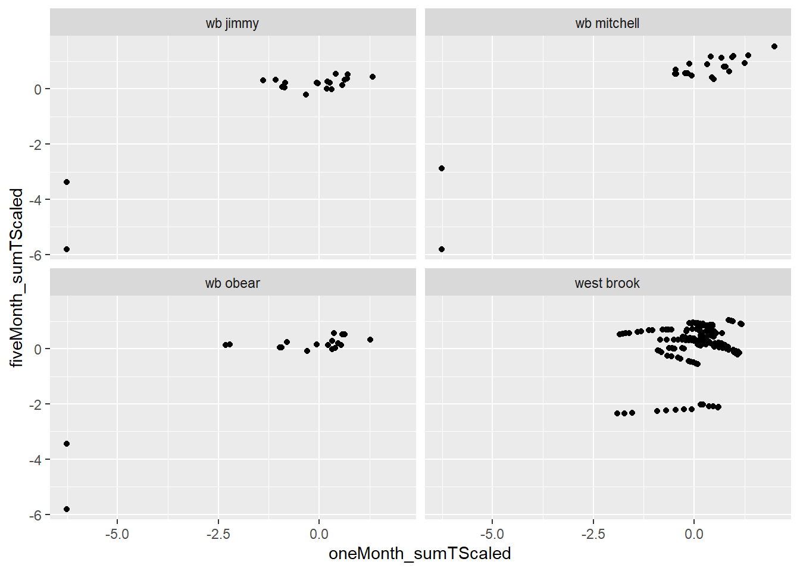

Code
library(targets)
envDataWB <- tar_read(envDataWB_target)
cdWB_electro <- tar_read(cdWB_electro_target)The question here is what is driving body size variation across years in brook trout and brown trout in the WB?
We focus on ageInSamples == 1 (age-0 fish in the fall sample) fish for growth model. This is the first sampling occasion that most fish are big enough to tag. Not all fish are big enough, however, and there is a number of untagged fish each year. We need to include both tagged and untagged fish in our age-0 size model.
Factors to include in the model are
1. Sample date
2. Cumulative temperature prior to sampling
3. Cumulative flow prior to sampling
4. Extreme flow events?? Floods, droughts?
5. Fish density, age-0 counts across all three salmonids
West Brook environmental data (flow and temperature) and electrofishing data
library(targets)
envDataWB <- tar_read(envDataWB_target)
cdWB_electro <- tar_read(cdWB_electro_target)firstObs_noTag <- tar_read(firstObs_noTag_target)
firstObs_tag <- tar_read(firstObs_tag_target)
firstObs0 <- tar_read(firstObs0_target)For each date in firstObs0 that at least one fish was captured, calculate summary stats for flow and temperature for different time periods:
1. Assumed spawning to capture
2. Assumed spawning to assumed emergence
3. Assumed emergence to capture
4. One month preceding capture
5. Three months preceding capture
5. Five months preceding capture
Then merge results with firstObs0 to create firstObs.
firstObsDates <- tar_read(firstObsDates_target)
firstObs_Env <- tar_read(firstObs_Env_target)
# merge env data into firstObs0
firstObs <- tar_read(firstObs_target)Unnest firstObs so environmental summary stats are available as data frame with the name of the time interval as the prefix to the statisticVariable name
firstObsUnnested <- tar_read(firstObsUnnested_target)ggplot(firstObsUnnested, aes(oneMonth_sumTScaled, fiveMonth_sumTScaled)) +
geom_point() +
facet_wrap(~river)
Min and max years (inclusive) for standardizing counts This is in targets, not sure if needed here
minYear <- 2000
maxYear <- 2015Counts by river and species
countsRSY <- tar_read(countsRSY_target)ggplot(countsRSY, aes(year, countRS_Scaled, color = species)) +
geom_point() +
geom_line() +
facet_wrap(~ river)
Counts by river
countsRY <- tar_read(countsRY_target)ggplot(countsRY, aes(year, countR_Scaled, color = river)) +
geom_point() +
geom_line()
Counts for the metaPopulation (WB, Jimmy, Mitchell)
Use these for modelling.
countsMetaY <- tar_read(countsMetaY_target)ggplot(countsMetaY, aes(year, count_Scaled)) +
geom_point() +
geom_line()
Merge metapopulation scaled counts into firstObsUnnested
firstObsUnnested <- tar_read(firstObsUnnested_target)
firstObsUnnestedWB <- tar_read(firstObsUnnestedWB_target) #cd1 <- cdWB_electro %>% filter(ageInSamples == 1, species != 'ats')
plotSppRiv = function(s, r) {
ggplot(firstObs %>% filter(species == s, river == r), aes(observedLength, color = is.na(tag))) +
geom_freqpoly() +
geom_vline(xintercept = 60) +
ggtitle(paste(s, r, sep = ', ')) +
xlim(c(30,125)) +
facet_wrap(~ year, scales = "free_y")
}
species = 'bkt'
riverOrdered = "west brook"
plotSppRiv(species, riverOrdered)


ggplot(firstObs %>% filter(species != "ats"), aes(observedLength)) +
geom_freqpoly() +
geom_vline(xintercept = 60, color = 'orange') +
facet_grid(species ~ year)
ggplot(firstObs %>% filter(species != "ats"), aes(observedLength, color = is.na(tag))) +
geom_freqpoly() +
geom_vline(xintercept = 60, color = 'orange') +
facet_grid(species ~ year)
Check 2002/bkt/WB, as an example Answer: because they are outside the study area (area = ‘above’ or ‘below’) or were tagging mortalities
firstObs2002BKT <- firstObs %>% filter(year == 2002, species == "bkt")
table(is.na(firstObs2002BKT$tag))
FALSE TRUE
295 253 ggplot(firstObs2002BKT, aes(observedLength, color = is.na(tag))) +
geom_freqpoly() +
geom_vline(xintercept = 60)
# looks like untagged area=inside fish wee morts, the rest were above or below
ggplot(firstObs2002BKT, aes(observedLength, color = is.na(tag))) +
geom_freqpoly() +
geom_vline(xintercept = 60) +
facet_grid(~area)
# check 2003
ggplot(firstObs %>% filter(year == 2003, species == "bkt"), aes(observedLength, color = is.na(tag))) +
geom_freqpoly() +
geom_vline(xintercept = 60) +
facet_grid(~area)
# same story as 2002Filter firstObsUnnestedWB for bkt, bnt and min/maxYear
d_WB_BKT_BNT <- firstObsUnnestedWB %>% filter(species != "ats", year %in% minYear:maxYear) %>%
mutate(species01 = ifelse(species == "bkt", 1, 0))
hist(d_WB_BKT_BNT$detectionDate, breaks = 250)
d_BKT_BNT <- firstObsUnnested %>% filter(species != "ats", year %in% minYear:maxYear) %>%
mutate(species01 = ifelse(species == "bkt", 1, 0))Mean model functions d_WB_BKT_BNT, “oneMonth_sumTScaled”, “oneMonth_sumFScaled” means1R <- getMeansDataByRiver(d_BKT_BNT, “oneMonth_sumTScaled”, “oneMonth_sumFScaled”)
getMeansData <- function(d, t, f) {
means <- d %>%
group_by(species, year) %>%
summarize(
meanLength = mean(observedLength, na.rm = TRUE),
meanEmerge_detect_sumTScaled = mean(emerge_detect_sumTScaled, na.rm = TRUE),
meanEmerge_detect_sumFScaled = mean(emerge_detect_sumTScaled, na.rm = TRUE),
meanTTime_sumTScaled = mean(get(t), na.rm = TRUE),
meanFTime_sumFScaled = mean(get(f), na.rm = TRUE),
meanYdayScaled = mean(ydayScaled, na.rm = TRUE),
meanCount_Scaled = mean(count_Scaled, na.rm = TRUE)
)
return(means)
}
getMeansDataByRiver <- function(d, t, f) {
means <- d %>%
group_by(species, year, river) %>%
summarize(meanLength = mean(observedLength, na.rm = TRUE),
meanEmerge_detect_sumTScaled = mean(emerge_detect_sumTScaled, na.rm = TRUE),
meanEmerge_detect_sumFScaled = mean(emerge_detect_sumTScaled, na.rm = TRUE),
meanTTime_sumTScaled = mean(get(t), na.rm = TRUE),
meanFTime_sumFScaled = mean(get(f), na.rm = TRUE),
meanYdayScaled = mean(ydayScaled, na.rm = TRUE),
meanCount_Scaled = mean(count_Scaled, na.rm = TRUE)
)
return(means)
}
plotMeans <- function(means){
out <- list()
out[[1]] <- ggplot(means, aes(meanTTime_sumTScaled, meanLength, color = species)) +
geom_point() +
geom_smooth(method = "lm", se = FALSE)
out[[2]] <- ggplot(means, aes(meanFTime_sumFScaled, meanLength, color = species)) +
geom_point() +
geom_smooth(method = "lm", se = FALSE)
out[[3]] <- ggplot(means, aes(meanTTime_sumTScaled, meanFTime_sumFScaled, color = species)) +
geom_point() +
geom_smooth(method = "lm", se = FALSE)
return(out)
}
runMeanModels <- function(means) {
modLMMeans1 <- lm(meanLength ~ (factor(species) + meanFTime_sumFScaled + meanTTime_sumTScaled + meanYdayScaled + meanCount_Scaled), data = means)
modLMMeans2 <- lm(meanLength ~ (factor(species) + meanFTime_sumFScaled + meanTTime_sumTScaled + meanYdayScaled + meanCount_Scaled)^2, data = means)
modLMMeans3 <- lm(meanLength ~ (factor(species) + meanFTime_sumFScaled + meanTTime_sumTScaled + meanYdayScaled + meanCount_Scaled)^3, data = means)
return(list(modLMMeans1, modLMMeans2, modLMMeans3))
}Mean lengths by river. This is information only. Using the WB data only shown here and in the next graph for the models.

Mean lengths for the mean length model.

Graphs for variables that do not depend on number of months


These models don’t run now (Jan 2024) because there is no vaiability in these variables meanFTime_sumFScaled + meanTTime_sumTScaled. Tried to track this down in modelYOY.R, but couldn’t find the reason - needs more digging.
[[1]]
[[2]]
[[3]]
df AIC
mod1[[2]] 17 166.7302
mod1[[3]] 27 168.9849
mod1[[1]] 7 173.5608
Call:
lm(formula = meanLength ~ (factor(species) + meanFTime_sumFScaled +
meanTTime_sumTScaled + meanYdayScaled + meanCount_Scaled),
data = means)
Residuals:
Min 1Q Median 3Q Max
-5.1418 -1.5452 -0.2163 0.6176 8.6697
Coefficients:
Estimate Std. Error t value Pr(>|t|)
(Intercept) 71.5616 0.9641 74.225 < 2e-16 ***
factor(species)bnt 0.6987 1.1533 0.606 0.549878
meanFTime_sumFScaled 2.3098 0.4069 5.676 5.7e-06 ***
meanTTime_sumTScaled -10.0733 2.0639 -4.881 4.6e-05 ***
meanYdayScaled -3.5099 1.4881 -2.359 0.026137 *
meanCount_Scaled -2.5990 0.6169 -4.213 0.000268 ***
---
Signif. codes: 0 '***' 0.001 '**' 0.01 '*' 0.05 '.' 0.1 ' ' 1
Residual standard error: 3.248 on 26 degrees of freedom
Multiple R-squared: 0.7656, Adjusted R-squared: 0.7205
F-statistic: 16.99 on 5 and 26 DF, p-value: 1.804e-07Relative importance for main effects model
[[1]]
[[2]]
[[3]] df AIC
mod3[[2]] 17 170.8139
mod3[[3]] 27 171.0687
mod3[[1]] 7 181.1604
Call:
lm(formula = meanLength ~ (factor(species) + meanFTime_sumFScaled +
meanTTime_sumTScaled + meanYdayScaled + meanCount_Scaled),
data = means)
Residuals:
Min 1Q Median 3Q Max
-5.8591 -2.2750 -0.1482 1.8597 8.8874
Coefficients:
Estimate Std. Error t value Pr(>|t|)
(Intercept) 73.5967 1.6917 43.505 < 2e-16 ***
factor(species)bnt 0.8862 1.2980 0.683 0.500829
meanFTime_sumFScaled 3.0110 0.6225 4.837 5.17e-05 ***
meanTTime_sumTScaled -11.6202 3.3421 -3.477 0.001799 **
meanYdayScaled 0.9634 1.2538 0.768 0.449180
meanCount_Scaled -3.0175 0.7220 -4.179 0.000292 ***
---
Signif. codes: 0 '***' 0.001 '**' 0.01 '*' 0.05 '.' 0.1 ' ' 1
Residual standard error: 3.657 on 26 degrees of freedom
Multiple R-squared: 0.7028, Adjusted R-squared: 0.6456
F-statistic: 12.3 on 5 and 26 DF, p-value: 3.52e-06Relative importance for main effects model
[[1]]
[[2]]
[[3]]
df AIC
mod5[[3]] 27 131.3590
mod5[[1]] 7 188.6845
mod5[[2]] 17 194.4131
Call:
lm(formula = meanLength ~ (factor(species) + meanFTime_sumFScaled +
meanTTime_sumTScaled + meanYdayScaled + meanCount_Scaled),
data = means)
Residuals:
Min 1Q Median 3Q Max
-5.9005 -2.7936 -0.4904 2.1352 10.8207
Coefficients:
Estimate Std. Error t value Pr(>|t|)
(Intercept) 71.3103 1.7354 41.090 < 2e-16 ***
factor(species)bnt 0.9500 1.4599 0.651 0.520922
meanFTime_sumFScaled 3.3114 0.8555 3.871 0.000654 ***
meanTTime_sumTScaled -5.8759 2.6680 -2.202 0.036710 *
meanYdayScaled 4.0720 1.4063 2.895 0.007574 **
meanCount_Scaled -2.6409 0.8102 -3.260 0.003106 **
---
Signif. codes: 0 '***' 0.001 '**' 0.01 '*' 0.05 '.' 0.1 ' ' 1
Residual standard error: 4.114 on 26 degrees of freedom
Multiple R-squared: 0.624, Adjusted R-squared: 0.5517
F-statistic: 8.63 on 5 and 26 DF, p-value: 6.379e-05Relative importance for main effects model
r-squared values and AICs for 1st, 2nd (2-way interactions) and 3rd (3-way interactions) order models
Relative importance of main effects models (repeat of above, but all in one place here)
We get negative cumulFlows because we have some negative flows from the flow extension model
# put some of these calculations into envDataWB
envDataWBFlow = tar_read(envDataWBFlow_target)firstObsYears <- firstObs %>%
filter(year %in% minYear:maxYear,
yday > 100, yday < 300)ggplot(envDataWBFlow, aes(yday, flow)) +
geom_point(aes(yday, observedLength/20), size = 0.75, alpha = 0.2, color = 'lightblue', data = firstObsYears) +
geom_point(size = 0.5) +
scale_x_continuous(breaks = seq(0,300, 30)) +
facet_wrap(~year)
ggplot(envDataWBFlow, aes(yday, cumulFlow / 10)) +
geom_point(aes(yday, observedLength / 20), size = 0.75, alpha = 0.2, color = 'lightblue', data = firstObsYears) +
geom_point(size = 0.5, color = 'darkgrey') +
geom_point(aes(yday, cumulTemp / 800), size = 0.5, color = "orange", data = envDataWBFlow) +
geom_point(aes(yday, flow), size = 0.5, data = envDataWBFlow) +
scale_x_continuous(breaks = seq(0, 300, 30)) +
#theme_publication() +
facet_wrap(~year)
ggplot(envDataWBFlow, aes(yday, cumulFlow, color = (year))) +
geom_point() +
scale_x_continuous(breaks = seq(0, 300, 30)) 
ggplot(envDataWBFlow, aes(yday, cumulTemp, color = (year))) +
geom_point() +
#geom_point(aes(yday, cumulTemp / 800, color = factor(year)), data = tmp) +
scale_x_continuous(breaks = seq(0, 300, 30))
Is there a sampling section effect?
Note: there are fish in sections > 50 for years 2002 and 2003, need to filter out early
ggplot(d_WB_BKT_BNT %>% filter( section <= 47), aes(factor(section), observedLength)) +
geom_boxplot() +
geom_smooth() +
facet_wrap(~year)
ggplot(d_WB_BKT_BNT %>% filter( section <= 47), aes(factor(year), observedLength)) +
geom_boxplot() +
geom_smooth() +
facet_wrap(~section)